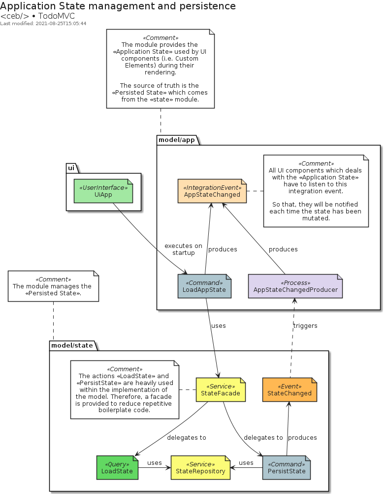
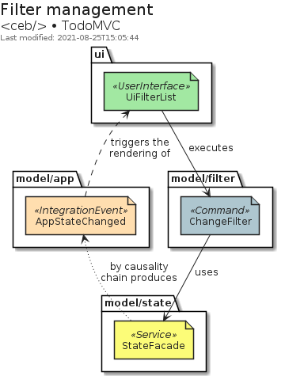
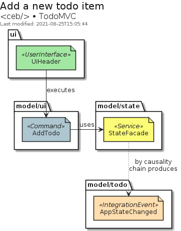
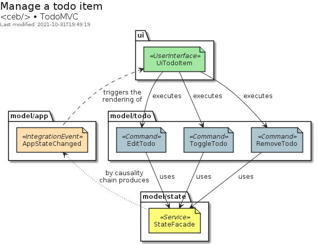
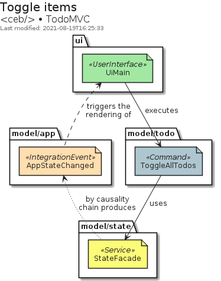

TodoMVC
This example is an implementation of the TodoMVC application with <ceb/>.
Introduction
The implementation embraces a kind of Hexagonal Architecture to provide a loose coupling integration between: the UI, the application logic (i.e. the model) and, the adapters (i.e. the persistence system ...). The communication between both concerns the UI and the application logic is managed by a Message/Event Driven approach which emphasizes the CQRS pattern.
Codebase
The codebase is composed of three main modules.
The module ui implements the user interface.
Its implementation focuses only on the user interactions delegating to the module model the management of the application state.
The module model implements the business logic following the CQRS pattern.
Its purpose is to handle the commands and queries coming from the UI in order to mutate, persist and then share the new application state.
Finally, The module infrastructure provides the adapters which implement the ports provided by the model.
Basically, the persistence system used to store the application state.
Application state
The application state is a data structure used by UI components.
The model/app module produces and shares it as an integration event.
The data comes from the model/state module which is responsible to persist and load the values.

Filter management
The Custom Element UiFilterList manages the filter selection with the fragment identifier of the URL displayed a regular HTML anchor elements, i.e. <a/>.
Therefore, on the haschange event, the command ChangeFilter is executed with the wished filter.
Because of the causality chain, the integration event AppStateChanged will be published with the wished filter.
So that, UiFilterListcan highlight the current filter.

Add a new todo item
The Custom Element UiHeader displays the form to enter a new todo.
On its submission, the command cAddTodois executed. Because of the causality chain, the integration eventAppStateChanged` will be published with the new item.

Manage a todo item
The Custom Element UiTodoItem displays the item content as well as UI artifacts to manage it.
According to the user interactions, the following commands can be executed: EditTodo, ToggleTodo and RemoveTodo.
Because of the causality chain, the integration event AppStateChanged will be published with underlying changes.

The Custom Element UiMain displays a checkbox which toggle the state of the items.
When the state of the checkbox changes, the command ToggleAllTodos is executed.
Because of the causality chain, the integration event AppStateChanged will be published with the updated items.
